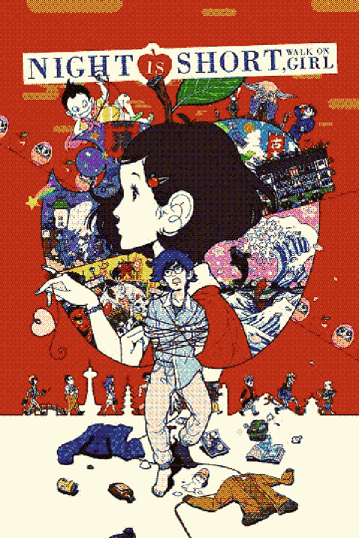
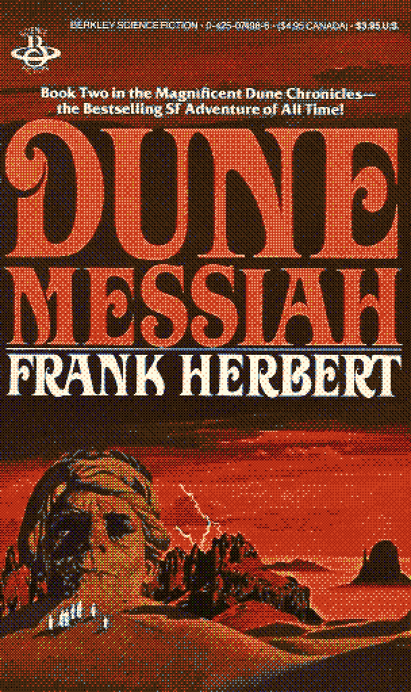
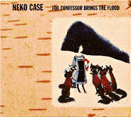
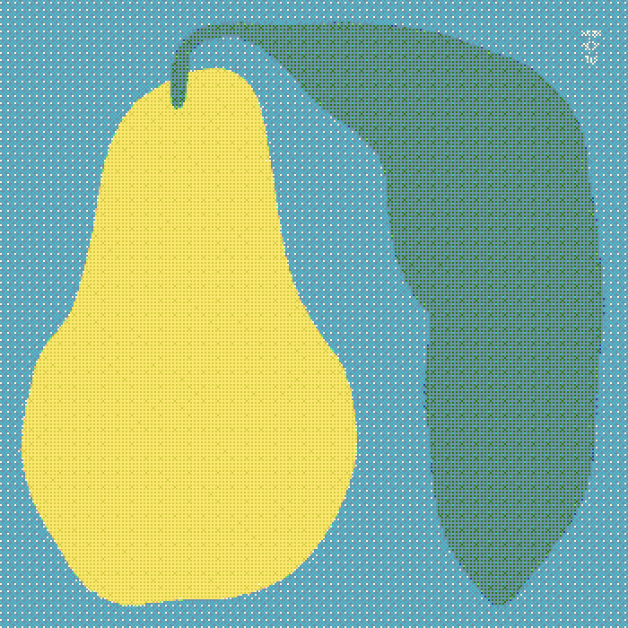

Media Recommendations
Some things I enjoy. Go check them out if they look cool. Or don't.
/To Watch
 |
angel's egg - mamoru oshii(1985)A very atmospheric movie with little plot, a lot of symbolism, and even more rain. |
 |
dragon's heaven - makoto kobayashi(1988)This is the closest we will ever get to having an animated Moebius movie. |
 |
the night is short, walk on girl - masaaki yuasa(2017)One of the most spirited, life-affirming movies I have ever seen. If you're ever having a bad day then watch this. I guarantee you will feel better. |
 |
nirvanna the band the show the movie - matt johnson(2026)saw this in a movie theatre with no context or knowledge of the show or matt johnson's stuff in general. genuinely one of the greatest times i've ever had in a movie theatre. this shit is awesome. |
/To Read
 |
the winter of our discontent - john steinbeck(1961)Steinbeck's usual writing style of choice is epic; great american upheavels portrayed through the actions and minutiae of those affected. In The Winter of our Discontent, Steinbeck focuses in on a much more subtle and slow change: the erosion of great sea-faring families from glory to mundane suburban life. |
 |
dune messiah - frank herbert(1969)Yes you need to read Dune to understand its sequel, but if you have read Dune (and if you haven't, you should), then Messiah is a great continuation that serves as an antithesis of sorts to the original. A lot of the subtler themes or subtext from the first book are pushed into the spotlight to hammer home Paul's identity and challenge the audience. |
/To Listen
 |
surfs up - the beach boys(1971)An album that released as the beach boys were trying to move away from their "pretty boy" imagery into something more enviromentally and socially conscious. More hip. The whole album is a great mix between some of their earlier stylistic tendencies and new experiments. Great stuff. |
 |
sakura - susumu yokota(1999)Great late-night chill out album. Lots of thick textures and melodic notes. Reminds me of greenhouses for some reason. |
 |
fox confessor brings the flood - neko case(2006)One of my personal favourite singer-songwriter albums. Rich, lyrical with very vivid imagery. Sounds like the Pacific Northwest makes me feel. |
 |
little electric chicken heart - ana frango elétrico(2019)Wild, experimental, and jazzy samba-eque record. The time changes are crazy. |
 |
golden pear - omni gardens(2023)Photosynthetic sinewaves. Somewhat akin to Mort Garson's Plantasia, lots of bubbly, soothing moog. Short and sweet, just like a pear. |
/To Play
 |
wipeout 3 - psygnosis(1999)Late 90's arcade racer with a high skill ceiling and great controls. Lulls you into a trance with it's electronic score while propelling you down raceways at several hundred kilometers per hour. Has incredible presentation, and also one of the most technically advanced games on the PS1. This is up there with Metal Gear Solid and Vagrant Story as some of the best looking games on the platform. |
 |
nuts - joon, pol, muutsch, char & torfi(2021)An atmospheric little puzzle game where you have to observe squirrels through cameras while unraveling the secrets of the forest. Recording squirrels through cameras is a really unique idea for a puzzle game, and through the short runtime the game never repeats the same challenge and always mixes the formula around. |
 |
sable - shedworks(2021) Atmospheric coming-of-age story inspired by Nausicaa and the works of Moebius. The highlight is definitely the art direction, with stenciled outlines and bold colors that change hue depending on the time of day. |
 |
tunic - andrew shouldice(2022)The best "video-gamey" video game I've ever played and a love letter to old-school Zelda. The puzzles required for the true ending are absolutely insane and make use of the established mechanics in a brilliant way. The music is also a refreshing genre change for this kind of game, leaning towards house music with flourishes of instrumental piano. |